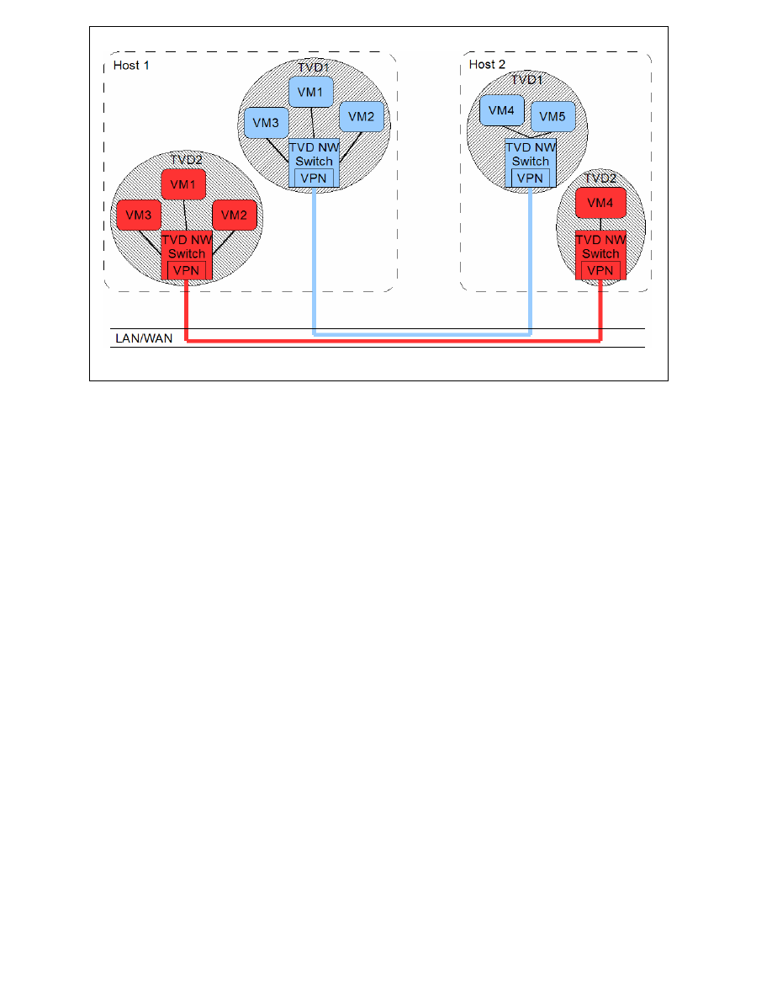

1
OpenTC Newsletter
June 2008
From the Open Trusted Computing (OpenTC) research project, sponsored by the European
Union.
In this issue:
-
Editorial: Trusted appliances and domains
-
Making sense of trust
-
From Trusted Platforms to Trusted Virtual Domains
-
Recent OpenTC publications
Editorial: Trusted appliances and domains
By: Arnd Weber, ITAS, Forschungszentrum Karlsruhe, Germany
Dear Reader,
At the “Trust 2008” conference in March in Villach, Austria, attended by more than 150
participants, two statements were made in plenary presentations by invited speaker, which I
highlight here, as they seem to be particularly valuable for supporting the case of OpenTC.
•
One statement was made by Paul England from Microsoft, who said that it is impractical
to authenticate Microsoft Windows due to there being too many drivers and non-integrity-
protected registry entries for example. Among the approaches he discussed for increasing
the security of PCs was the use of virtualisation so that drivers could be isolated from the
Trusted Computing Base, and Windows re-instantiated from a virtual DVD, if needed.
Personal
OS
Personal
OS
Secure Corporate
Client Personas
Personal
Client Persona
Trusted Corporate
Client Appliances
Trusted Personal
Client Appliances
Media
Media
E-Govt
E-Govt
Home
Banking
Home
Banking
Remote
IT
Mgmt
Remote
IT
Mgmt
Corporate
OS
Corporate
OS
Soft
VoIP
Soft
VoIP
Trusted Client Firmware – Trusted Virtualization
Trusted Client Firmware – Trusted Virtualization
Figure 1: Martin Sadler: Use of Trusted Virtualization.
2
•
The other statement was made by Martin Sadler from Hewlett Packard. After a review of
threats to which corporate PCs are exposed, such as eavesdropping attacks by foreign
military, insider attacks on corporate assets, etc., he envisioned a move towards
virtualized systems hosting multiple types of operating systems and supporting a number
of Virtual Appliances (specialized lightweight virtual machines). Example Virtual
Appliances include home banking, a corporate soft phone, a protected compartment for
auditing purposes etc. (see Fig. 1).
If this is how the use of personal computers evolves, the OpenTC virtualization could play a
significant role in the future.
Now assume such an OpenTC-based hypervisor system existed. How could future users judge
its trustworthiness? This is discussed in this issue in an article from the project’s work
package on quality and evaluation. In “Making Sense of Trust” Pete Herzog describes the
approach developed by ISECOM, the Institute for Security and Open Methodologies, an
open-source collaborative community, for measuring the trustworthiness of a system such as
OpenTC.
In past editions of our OpenTC newsletter, we explained the motivation and architecture for
trusted virtualized platforms (issues June 2007 and March 2008) and discussed methods for
white and black box testing of hypervisor layers to improve their level of trustworthiness
(issues Oct. 2007, Jan. and Feb. 2008). We also provided overviews of OpenTC implemen-
tations for two specific end-user scenarios, namely for Private Electronic Transactions (PET)
and for Corporate Computing @ Home (CC@H) (issues Jan. and March 2008). From this
edition onwards, we will also focus on issues pertaining to collections of trusted virtualized
platforms rather than single instances. To this end, we will address the general OpenTC
framework, that is, prerequisite components and specific instances of a trusted infrastructure.
In this issue, Konrad Eriksson from IBM Laboratories Zurich, Switzerland, and Dirk Kuhl-
mann from Hewlett Packard Laboratories, UK, describe the concept of “Trusted Virtual
Domains”. They explain that with today’s virtual machine technology, traffic from one
compartment is potentially readable from another. With the new approach it will be possible
to create domains with trust properties that can be attested to. Compartments within domains
that have the same trust properties are isolated from compartments of other domains.
We close with an announcement of new research papers produced by members of the
OpenTC consortium.
References:
[1] England, Paul: Practical Techniques for Operating System Attestation. Keynote
presentation at “Trust 2008”, Villach, March 11-12, 2008.
[2] Sadler, Martin: The role of trusted infrastructure in building assurance and reducing
cybercrime. Keynote presentation at “Trust 2008”, Villach, March 11-12, 2008.
Contact: arnd.weber (at) itas.fzk.de
Acknowledgements: Our thanks go to Richard Brown, Eimear Gallery, Taru Kankkunen,
Dirk Kuhlmann and Herbert Petautschnig for their help in preparing this issue.

3
Making sense of trust
By: Pete Herzog, ISECOM, Barcelona, Spain
In the Hal Hartley movie Trust, the main characters determine that the properties of “love” are
having admiration, respect and trust. Having determined quickly that they share the first two,
they journey through the film trying to create trust so they can have love. Similarly, the
Trusted Computing Group (TCG) is claiming to create trust so they can have security, a much
less romantic goal but nevertheless an equally difficult journey.
As the TCG writes, “Trust as it applies to trusted computing is ‘hardware and software
behaves as expected’.” [1] However, ask any person in a committed relationship and they will
tell you that trust is certainly not about each other behaving as expected. For people, that
definition would suggest a controlling or subjugating partner and those are terms that divorce
lawyers use to explain how the relationship broke down. This highlights the huge gap that
exists between what the TCG defines as trust for Trusted Computing and what the general
public expects from the meaning of trust.
Trust is generally accepted by the public to be a good thing on a par to assured reliance and
truth. To them it is something that allows a person to put their guard down and have peace of
mind and assurance regarding a decision, message, place, or person, including themselves.
Some people think of trust as a positive emotion like love and happiness, but in reality such a
comparison is not so straightforward. For example, these days people are prescribed medi-
cation or take drugs in order to feel love or happiness. However, if a pill were to exist that
could make a person more trusting of other people or other things, would they take it?
Trusting as a trait is often considered naïve, and unlike feelings such as hot or cold, trust is
often accompanied by an innate need to establish something tangible on which to rationalize.
For example it's rare that people feel the need to rationalize why they feel hot or cold.
In sociological studies [2], trust is seen simply as a tool which may be used either for truth or
lies. It is often no more than our prediction to an outcome based on what we know. The
probability of this outcome is shaped by our own internal rules which come from experience
and advice. It is the properties from these rules that we have chosen to identify and apply to
Trusted Computing. ISECOM calls this type of trust that bridges the gap between the human
evocation of trust and the goals of the TCG as “operational trust”. To define something in
operational terms is to explain its use in a professional context under real-world conditions.
Therefore having these rules to calculate operational trust would allow the average person to
understand why and how they can actually trust in a computer system even if it does not trust
in them. This has been part of the objective of the OpenTC project, specifically in Work-
package 7, which addresses quality and evaluation (see the article by Puccetti in OpenTC
newsletter October 2007) and applied to the system developed in the OpenTC project.
In the third version of the Open-Source Security Testing Methodology Manual (OSSTMM)
[3], a standard created by ISECOM, for security testing, trust in operational security is defined
as a bad thing. Where operational security is like a wall that separates threats from assets,
trust is a hole in that wall. It is defined in the OSSTMM as “wherever the target accepts
interaction freely and without credentials from other targets within the scope.” This
confidence that one person or system may have in another, so much so as to let their guard
down, is the antithesis of security. Trusts can be faked, manipulated, and changed which
creates problems for any place where security is desired. This is a concept long known and
Benjamin Franklin (1706 – 1790) is attributed with saying, “Three people can keep a secret if

4
two are dead.” This evokes a very cynical yet true statement from ISECOM in regards to
operational security, “Where there is no trust, there can be no disappointment from broken
trust.”
If it is operational security for the system or the information within that the TCG wants to
achieve through trust then they are looking for controlled computing. Contemporary research
at ISECOM finds that for operations that controls are defined by what people refer to as being
safe or safety. Safety is the controlling of threats we live with and their impact. Such control
allows people to trust because it lets them understand how much influence they have over
something. Then for that which they cannot completely control, these internal rules people
have for trust, allow them to rationalize for the missing controls. Therefore the system doesn't
need to be completely secure and control doesn't need to be absolute as long as the person can
rationalize how much they can trust so they can be appropriately confident or expect a certain
amount of disappointment.
The formalization of the rules allows us to toss out any non-quantifiable notions (soft rules)
that either cannot substantiate the trust level or can disrupt it with too heavy an emotional
weight. This leads us to believe that all rules must include all quantifiable properties, be
objective, and be understandable by the common person not necessarily involved in Trusted
Computing.
We determine that quantification of operational trust should be in a percentage. People are
known to make comments like, “I trust him only as far as I can throw him.” Such comments
express an amount of trust. Words and phrases like somewhat, almost, mostly, and most of
the time, express an amount of trust in someone or something. Therefore the quantification
should be expressed in a means that can match such language.
We also determine that rules need to allow for the creation of specific, objective questions
which quantify and count operational trust into a percentage. These questions then become the
test tasks and will be specific to what we want to trust. The tests to know how much we may
want to trust a computer depend on whether we are trusting it with our assets, trusting it to
perform a task, or simply to be there for us. This is similar to the way trusting a person
depends on certain criteria but the question itself is phrased differently. For example, a person
may find they trust another person more if that person is subjected to certain laws that punish
offenses that break the trust; but that same line of reasoning does not apply for trusting a
computer.
As stated earlier, the OSSTMM defines operational trust as a negative thing which comes
from an unauthenticated interaction between two entities in a scope, much like what people
call “blind trust” which may be good for relationships but is bad for security. But not all trust
is actually negative. Another factor of trust: confidence, as understood in general context, is
applied by people in a similar manner to trust. So much so actually that it is often used inter-
changeably. In an operational context, confidence is also a negative thing that begets “the
con” or “conning” and “con-man” which describes the abuse of trust as an attack on another
person. However, confidence in oneself is a very different thing, highly coveted, and a subject
for seminars of self-improvement. People would and do get prescribed medications or take
illegal drugs to increase self-confidence. Alcohol is often called a “shot of courage” and
people on cocaine claim to feel that they are full of self-confidence. Therefore a system that is
built as operationally “self-confident” would have to be one that, apart from the configuration
phase determined by the system owner, has the ability to maintain control of itself and not be
subjected to outside control. It would be a computer that trusts itself, so to speak, which is a

5
confidence it can communicate to others. This is the type of trusted computing that people
want to expect from a computer system and if it can prove this level of self-control then that
would allow for the computer/owner symbiosis to exist where what the computer does can
truly only be from the configurations and actions of the owner. The computer is then an
extension of the owner as user. Unfortunately, this kind of trusted computing is something
that is just not possible with common computer systems and may not yet be possible with
Trusted Computing technology today. What this shows is that a computer that has full control
over itself is a positive trust but a computer that blindly trusts another system is a negative
trust and this would reflect in the security metrics of an OSSTMM security test. The reason
for this discrepancy is because as we measure the operational security levels of the two
scenarios, the self-confident computer would maintain the same level of security as that of the
owner since it cannot be influenced by outside forces and the other is vulnerable to any trust-
type of attacks: fraud, misrepresentation, spoofing, lies, and cheating. Therefore if a company
provides an employee with an operationally “self-confident” laptop where the company is the
owner, then that laptop can connect with that company infrastructure from anywhere, regard-
less of the environment, with the same level of trust that the company has in its own
infrastructure. This self-confidence comes from implementing the proper controls for all
system interactions whether local and remote. Therefore, in the terminology of the OSSTMM,
self-confidence is not a property of operational trust but rather a result of operational safety.
The implication of this is that operational security testing must be a part of the trust rules as a
means of calculating the effectiveness of these controls providing system self-confidence.
Security as a confidence level can be used to rationalize how trustworthy it is as per why we
should trust it. This appears backwards from the TCG's goals of creating trust to have
security. In actuality though, they are building system self-confidence which equates to better
controls and therefore improved security. For example a 90% operational security score as
measured in the OSSTMM as a Risk Assessment Value or RAV [4] means one can “mostly
trust” or “almost certainly trust”. However 90% RAV does not convey full trust since even a
high security level can still be exploited using trust. Actually, that is how conning and Social
Engineering attacks often work. Either a trust is established based on a person's faulty internal
trust rules caused by myths, inexperience, and bad advice, or a strong, already existing trust is
exploited when the target is fooled by thinking the attacker, who is playing a role, is that peer,
authority, or representative they trust.
Unfortunately, it may not always be possible to know the operational safety of just that person
or thing we are expected to trust. This means that the real need for being able to quantify
operational trust occurs when we must rely on trust rules to determine and maybe rationalize
trust. Rationalizing trust in the unknown requires that we examine first the properties which
will lead us to trust that person or thing. Operational trust is thus obtainable quantitatively
through the calculation of those trust properties.
In these trust properties you may find some popular trust properties missing such as compo-
sability and transitivity. These properties are popularly used by people to make trust decisions
and they are furthermore provided in many social and commercial venues as if they are a
good means towards creating trust in the unknown. In composability, a person makes a trust
choice based on the quantity and their similarity to unknown people who express their own
levels of trust for another person or object. In transitivity, a person makes a trust choice based
on a chain of trust where a person accepts the trust that an already trusted person makes for a
recommendation to trust another person or object. Both cases are created from logical
fallacies and have nothing which can be factually measured. Transitivity is a person sub-
stituting their own trust decision for someone else's whom they supposedly trust. For

6
example, my mother smokes and claims never to have experienced health problems from it
and I trust my mother so I will also smoke. While this is how some people make trust choices,
it is actually based on logical fallacy. A similar example could be that my mother trusts the
witchdoctor will heal my child and I trust my mother so should I really trust that the priest
will heal my child even if my own experience tells me otherwise. In the same principle, com-
posability is no more than mobbing, the pressure created by social mobs. Many studies
support the loss of reason when mobs act and individuals do horrible things they would never
have done on their own. It is the same as ignoring the health research on smoking because the
1 billion smokers in the world can't be wrong.
So what are these trust properties? They are the quantifiable, objective elements which are
used to create trust.
1.
Size: the number to be trusted. Must the trust extend to just one or to a whole group or
include a chain of other trusted people or objects? Less to trust means less that can disap-
point.
2.
Symmetry of trust: the vector (direction) of the trust. Trust may be one way (asymmetri-
cal) and defined as to which way the trust must travel or both ways (symmetrical). A per-
son who must also trust you has to consider the reciprocation from breaking the trust.
3.
Transparency: the level of visibility of all operational parts and processes of the target and
its environment.
4.
Control: the amount and direction of influence over the scope by the operator(s) (also
known as subjugation).
5.
Consistency: integrity over time. The search for historical evidence of compromise or
corruption.
6.
Integrity: the amount and timely notice of change within the target.
7.
Offsets of sufficient assurance: compensation or punishment for failure. The comparison
of the value placed within the target to the value of compensation to the operator or pun-
ishment to the target should the trust fail.
8.
Value of reward: financial offset for risk. The amount of gain for which the risk of putting
trust in the target is sufficient to offset the risk of failure in the trust.
9.
Components: the amount of influences over the target prior to its current state. The more
influential interactions the person or object of the trust has had, the greater the likelihood
malicious players have corrupted the person or object making it untrustable.
10.
Operational security: adequacy of security, controls, and limitations. The amount and
effectiveness of protection levels which tell the actual state of the target's security.
Rational decision-making where it pertains to trust often does not include security because it
is mistakenly confused for risk and is therefore satisfied by rule no. 8. However an OSSTMM
security test can create a metric of a system's attack surface both inside and out. The attack
surface is the attacker's way of seeing the exposed limitations in a system for exploitation. A
self-confident system would have no attack surface. An additional tool, like the Source Code
Analysis Risk Evaluation (SCARE), may also be used for calculating the attack surface of
computer source code in areas where the hardware or software make operational security
testing infeasible or impossible [5]. SCARE has been developed within OpenTC and initially
used to track attack surface changes to Xen source code during development releases and will
further be applied to other code towards determining system self-confidence.
When creating the trust rules from the trust properties for quantification it is important to note
that trust decisions are not linear. There is no building towards trust in a particular order or
even an effort value system where it can be determined that one level requires more effort

7
than another. In methodology terms, it appears irrational when calculated. A decision to trust
therefore may be concluded by an answer from just one of the following questions which
make up the trust rules. The trust rules are the rules for creating quantifiable, operational trust
tests which must be created for each type of target and by target, we refer to people,
processes, or objects.
•
Determine how many targets are in the scope and how they are to be differentiated from
each other (indexed).
•
Determine the trust symmetry for each target.
•
Determine the transparency of the target's components, operations, and motives.
•
Determine which targets are under the control of self or a trusted person.
•
Determine the frequency and length of time for which the target's integrity is corrupted.
•
Determine the number of the target's components, operations, and motives which have
their integrity verified and the frequency of that verification.
•
Determine the combined value of offsets of sufficient assurance (insurance or leverage)
such as reprisals, liens, or harmful penalties against the target.
•
Determine the value gained from interaction with the target.
•
Determine the number of influences the target has interacted with since its inception.
•
Determine the value of the security measures and controls (safety) subtracting the known
limitations (see the OSSTMM for the calculation of this RAV metric).
The trust rules have been developed as part of OpenTC and are being applied to the project
itself as well as other Trusted Computing systems for quality control. It is necessary in this
project to determine if the means used to create a trusted system, the benefit of open source
being a tenet of trust in this project, does indeed create a system which can be more trusted
than other existing Trusted Computing systems. The challenges in the creation of the ope-
rational trust rules required working within the context of operational security and the social
concepts of trust as used in psychology and sociology. The creation or further development of
multiple tools at ISECOM such as the RAVs, SCARE, and the OSSTMM have been greatly
influenced by this research for OpenTC.
Still, the challengers of a trust metric say that it is part of human nature and cannot be mea-
sured anymore than love or hate, of which both can be irrational or impossible to determine
the causes thereof. However, where love and hate are emotions, operational trust is not. It is a
decision which we can feel for rather than an emotion which we feel. What we find is that as a
decision, operational trust is rationalized by considering some subset of the trust rules which
we have internalized, depending upon the skill and the experience of the decision maker. So
formalizing operational trust tests for Trusted Computing systems from objective rules as
these can not only make trust impersonal but transferable to others who want to purchase or
work with similar systems. Ideally, a future computer system could come with a sticker on it
that reads “90% Trust Verified for Home use not exceeding 25,000 ” and we can take it home
if we choose that 90% is good enough for us – that is if we can trust who put the sticker there
in the first place.
References:
[1] Trusted Computing Group: Mobile Trusted Module Specification FAQ. 2007.
https://www.trustedcomputinggroup.org/faq/MobileDeviceFAQ/
[2] Many papers cover the use of truth and lies in trust however one example of this is Trust
as a Critical Concept by Anders Bordum
(http://ep.lib.cbs.dk/download/ISBN/8799022400.pdf)
8
[3] http://www.isecom.org/osstmm/ (OSSTMM v.3 currently only available to team members
and subscribers)
[4]
http://www.isecom.org/research/ravs.shtml
[5]
http://www.isecom.org/research/scare.shtml
About the author:
Pete Herzog is Managing Director with ISECOM, Barcelona, Spain. ISECOM is an open
security research organization registered as a non-profit and operating with more than 5500
volunteers in over 30 countries. The ISECOM mission is to make sense of security which
includes clarification, standardization, and education of security.
Acknowledgements:
Our thanks go to Richard Brown, Torsten Duwe, Armand Puccetti, and anonymous reviewers.
Contact:
pete (at) isecom.org
From Trusted Platforms to Trusted Virtual Domains
By: Konrad Eriksson, IBM Laboratories Zurich, Switzerland; and Dirk Kuhlmann, Hewlett
Packard Laboratories, Bristol, UK
Trusted Virtual Domains
A fundamental concept of the OpenTC framework is what we term the Trusted Virtual
Domain or TVD. Such a TVD consists of an arbitrary number of virtual or real machines that
are interconnected and can attest to similar trust properties. Figure 1 shows the separation of
compartments on a single host, each color corresponding to a specific trust level and security
policy, as in the Corporate Computing @ home prototype (described in the last issue).
TPM
Computer Hardware
OpenTC Layer
Pr
iv
at
e
S
ecu
rit
y
Co
rpor
a
te
Oth
e
r
Isol
a
tio
n
Is
ol
a
tio
n
Is
ol
a
tio
n
Figure 1: Separation of compartments

9
Figure 2: TVD network overview
Virtualization naturally allows us to run multiple compartments with similar trust attributes in
parallel on a single host. The instances within a TVD could be perfect clones of each other, or
could have an entirely different configuration apart from the two things TVD instances must
hold in common: trust level and policy.
Trusted Computing technology enables a compartment to attest to its trust attributes both
locally (that is, to other compartments on the same physical host) and remotely (that is, to
instances running on different physical hosts). To simplify matters, we do not distinguish
between these two cases unless it proves necessary. Consequently, the simplest conceivable
rule for governing a Trusted Virtual Domain is to allow just those instances that share similar
trust levels to interact with each other.
Figure 2 shows an example of this policy for a simplified setup with only two hosts and two
trust levels. The hosted red and blue instances share respective red and blue virtual LANs
using the same physical network and carrier.
Platform security services for TVDs
The (simplified) TVD model presented so far requires a number of security and management
components on the physical platform to create and manage a trust domain. Amongst others,
we have to address the following problems:
1.
After boot-up, a host platform should signal its availability for hosting virtual instances. If
the boot-up included the launch of virtual instances of specific trust levels, the host must
support mechanisms that allow those instances to join their respective domains.
2.
A host platform must be capable of attesting to the integrity of its boot-up process, which
incorporates, at the very least, hardware initialization, boot loader execution and the
launch of the hypervisor layer and platform security and management services. All these
actions are performed as part of an authenticated boot chain.

10
3.
A platform must be capable of attesting to the integrity of any hosted compartment. Fur-
ther, no compartment, should gain access to critical data on local and remote hard disks or
a colored VLAN segment unless its boot integrity can be demonstrated. This requirement
extends to relevant configuration information, policies, and resources.
4.
A platform should be capable of retrieving and enforcing compartment and network poli-
cies for a TVD that are not known to the platform at boot time of the hypervisor. This
would give us the option to abstract away from specifics and internals of hosted instances,
relying on a strict compartment policy to confine whatever bad things might occur in this
compartment.
Physical host properties
In order to meet these requirements, we can leverage the following building blocks provided
by the trusted physical nodes:
1.
Isolation of compartments enabled by the hypervisor;
2.
Authenticated boot of the hypervisor and Security Services;
3.
Authenticated boot of compartments;
4.
Access to local persistent storage, which can be made dependent on the success of 2 and
3;
5.
Access to physical and virtual network, which can be made dependent on the success of 2
and 3;
6.
Cryptographic keys, which can be securely generated and protected by the Trusted Plat-
form Module.
Using these building blocks, we can start to map the requirements to a set of platform and
infrastructure components that implement the Security Service Management Framework
(SecServ) for Trusted Virtual Domains. Its design and implementation is described below. We
use the Xen hypervisor as the reference model because the concept of TVDs has been
developed with datacenter applications in mind. In this context, Xen (rather than L4) is the
typical implementation base. Note: in the following, the terms “compartment” and “virtual
machine (VM)” are used interchangeably.
SecServ – The OpenTC Security Services Management Framework
SecServ is a security management framework for the Xen hypervisor that consists of daemons
and a set of utilities running in Dom0 (the Xen management domain). The core SecServ
modules are the Compartment Manager (CompMgr), the Integrity Service Manager
(IntSrvMgr) and the Secure Virtual Device Manager (SVDM) as depicted in Figure 3.
The Compartment Manager (CompMgr) handles the life cycle (starting, monitoring and
stopping) of compartments and is controlled via the ibmxm command-line tool that simulates
the behavior of the common Xen command-line tool xm.
When starting a new compartment, the Integrity Service Manager (IntSrvMgr) gets invoked to
perform integrity checks on selected resources that the compartment depends on. Typically,
this will include collecting the integrity measurement of the underlying virtualization layer,
measuring VM configuration, kernel and system disk.
11
Figure 3: Security Services overview
The Integrity Service Manager also enables the unsealing of encryption keys for data storage,
managed by the Secure Virtual Device Manager (SVDM). The SVDM is responsible for
setting up security critical resources required to run a compartment. It controls components
such as disks, loop-back devices and encryption/decryption modules.
Storage keys may be sealed to many configurations, for example:
TCB+VMconfig+sysDisk: In this case, to successfully access a storage key the Trusting
Computing Base (HW, Bios and Bootloader), the VM configuration and the system
disk (containing the OS for the VM) must be in the same state as they were when the
key was sealed.
TCB+VMconfig: Here, the system disk is omitted from the sealing process. This allows
changes to the disk to be made between startups of the hosted compartment, which
might be necessary for a compartment running an operating system which requires
read/write access to the system partition (for example for log files, temporary directo-
ries or swap-files). For such configurations, we are left without the option to exter-
nally check the integrity of the compartment. However, we can still provide confiden-
tiality for the disk content.
After the IntSrvMgr has performed the integrity checks on the hypervisor and the compart-
ment to be launched, the SVDM sets up the hardware and storage resources required by the
compartment. These requirements are described in one or more VM configuration files
processed by the Compartment Manager component (CompMgr). This includes setting up on-
the-fly encryption/decryption of data to and from storage with keys unsealed by the IntSrvMgr
(utilizing the Trusted Platform Module) to ensure data confidentiality.
12
After the SVDM has completed its tasks, the CompMgr issues a call to the Xen hypervisor to
start the VM. What results is a compartment which has been instantiated using known and
verified resources.
Trusted Virtual Domain Network Service
Today’s virtual network implementations for Virtual Machine Monitors (VMMs) typically
rely on virtual switches or bridges that connect the virtual network interfaces of all virtual
machines (VMs) to the actual hardware of the physical host. Without additional packet
filtering mechanisms in place, all VMs can potentially see all traffic. No isolation or other
security guarantees can be given in this case.
Trusted Virtual Domains (TVDs) match VMs of similar trust properties and connect them as
though they were on a separate network segment, enabling the enforcement of cross-group
security requirements (isolation, confidentiality, integrity, information flow control) in a
distributed architecture. One possibility is to group VMs belonging to the same customer and
which are distributed across several physical machines in a data center into virtual enclave
networks. Each group of VMs has the same protection as if the VMs were hosted on a
separate physical LAN, as depicted in Figure 2.
The provision and enforcement of the corresponding configuration and policy is realized by a
local enforcer, called TVD-proxy, and a virtual switch (called NW Switch in Figure 2). TVD-
proxies and switches are dedicated to specific trust domains, running on each physical host
that has a share in a particular TVD. The virtual switch implements level 2 (MAC-layer)
packet switching. It also provides configurable security mechanisms for encapsulating and/or
protecting packets traveling between physical hosts.
Figure 4: Core Security Services modules and their inter-connections
13
The core task of the TVD-proxy is to locally enforce the policies for its TVD by:
•
Retrieving TVD policies from TVD master over a secure channel.
•
Verifying that the Trusted Computing Base (TCB) is in a state allowed by the TVD
policies.
•
Attesting compartments wanting to join or claiming to be part of the TVD.
•
Managing virtual switches and controlling which VMs are allowed to be connected to the
switch.
•
Managing further encapsulation mechanisms of network packets traveling between
physical hosts to provide data integrity and confidentiality of TVD network traffic. One or
more combinations of well-established network virtualization technologies such as
Ethernet encapsulation, VLAN tagging and virtual private networks (VPNs like Ipsec or
OpenVPN) may be used.
Figure 4 depicts the components involved in these tasks. Note that opposed to all other
components, the TVD Master is not a platform-local service, but is part of the TVD
management backbone infrastructure that resides on a remote host.
Figure 5: Startup of a compartment with TVD access
For a compartment to join a TVD, the Compartment Manager interacts with the TVD-proxy
via an attestation protocol. It communicates the integrity measurements of the hypervisor and
compartment gathered by the IntSrvMgr. The decision of whether the compartment complies
with the TVD policies is left to the local TVD-proxy which has a subset of the global policies
for its TVD. If the compartment satisfies the policies of the TVD-proxy, it is granted access to

14
a pre-allocated Xen backend network interface on the TVD’s private virtual switch. If policies
further state that the user should be authenticated, the TVD-proxy initiates a user authentic-
cation process via the secure GUI Interface (sGUI Interface) (GUI being built by the project)
to query the user for the required credentials.
From now on the compartment can communicate with – and only with – other entities within
the same virtual network. As network packet switching is done on Level 2 (MAC) broadcast,
multicast and IP-assigning can be employed in much the same way as on a physically separate
network. This simplifies converting old network setups into TVDs.
Inter-host communication can be secured in different ways depending on what policies state,
and one way to provide confidentiality and isolation is to facilitate VPN tunnels between the
hosts a TVD spans (virtual network, vNet). They are set up by the TVD-proxy via the VPN-
ctrl module, usually by the time the compartment is connected to the local virtual switch
(vSwitch).
Figure 5 outlines the interactions between the different components when starting up a
compartment with access to a specific TVD.
Depending on the TVD policies, a compartment will either be disallowed onto the virtual
network or not even started. A disallowed start or network attach occurs if any of the steps for
launching a TVD enabled compartment fails the integrity checks for software, configuration
or policy.
Outlook
This article is a coarse outline of the OpenTC security architecture for distributed computing.
In order to fully appreciate the architecture, further details have to be discussed, for example
with regard to provisioning the TVD proxy, TVDs spawning untrusted networks, or key and
configuration management. These topics will be addressed in an upcoming OpenTC news-
letter – stay tuned!
About the authors:
Konrad Eriksson is a research software engineer at IBM Zurich Research Lab, Switzerland,
working with security for virtualized systems in the Security & Assurance group.
Dirk Kuhlmann is a senior research engineer for Hewlett Packard Laboratories in Bristol, UK,
where he works as a member of the Systems Security Laboratory. He acts as the overall
technical lead for the OpenTC project.
Acknowledgements:
Our thanks go to Richard Brown and Eimear Gallery.
Contact:
kon (at) zurich.ibm.com
dirk.kuhlmann (at) hp.com
15
Recent OpenTC publications
Since the publication of the last newsletter, the OpenTC project partners have produced the
following scientific publications:
Bangerter, E.; Djackov, M.; Sadeghi, A.-R.: A Demonstrative Ad-hoc Attestation System.
Proceedings of the 11th Information Security Conference (ISC 2008), to appear.
Brandl, H.: Trusted Computing on embedded Platforms. Future of Trust in Computing.
Berlin, Germany, 30 June – 2 July, 2008.
Cesena, E.; Ramunno, G.; Vernizzi, D.: Secure storage using a sealing proxy. EUROSEC'08:
Proceedings of the ACM SIGOPS European Workshop on System Security Glasgow, Scot-
land, March 31, 2008, pp. 27-34 ACM SIGOPS, ISBN: 978-1-60558-119-4 . DOI:
10.1145/1355284.1355290
Chen, L.; Löhr, H.; Manulis, M.; Sadeghi, A.-R.: Property-Based Attestation without a
Trusted Third Party. Proceedings of the 11th Information Security Conference (ISC 2008), to
appear.
Groszschaedl, J.; Vejda T.; Page, D.: Reassessing the TCG Specifications for Trusted
Computing in Mobile and Embedded System. IEEE International Workshop on Hardware-
Oriented Security and Trust (Poster).
Murray, D.; Hand, S.: Privilege separation made easy. Proceedings of EuroSec 2008.
Glasgow, UK, 2008. http://www.cl.cam.ac.uk/research/srg/netos/papers/2008-
murray2008privilege.pdf
Murray, D.; Milos, G.; Hand, S.: Improving Xen security through disaggregation. Pro-
ceedings of the 4th ACM International Conference on Virtual Execution Environments (VEE
2008). Seattle, WA, USA, 2008. http://www.cl.cam.ac.uk/research/srg/netos/papers/2008-
murray2008improving.pdf
Sadeghi, A.-R.; Stüble, Chr.; Winandy, M.: Property-Based TPM Virtualization. Proceedings
of the 11th Information Security Conference (ISC 2008), to appear.
Sothmann, S.; Brandl, H.: Trusted Computing Management Server (TCMS): Making Trusted
Computing User Friendly. Future of Trust in Computing. Berlin, Germany, 30 June – 2 July,
2008.
Tögl, R.: Existing and Future Security APIs for Trusted Platform Modules (Abstract +
Presentation). International Workshop on Analysis of Security APIs. Pittsburgh, USA.
http://homepages.inf.ed.ac.uk/gsteel/asa/
Tögl, R., Pirker, M.: An ongoing Game of Tetris: Integrating Trusted Computing in Java,
block-by-block. Future of Trust in Computing. Berlin, Germany, 30 June – 2 July, 2008.
Yau, P. W.; Tomlinson, A.; Balfe, S.; Gallery, E.: Securing grid workflows with trusted
computing. International Conference on Computational Science (ICCS 2008): Applications of
Workflows in Computational Science. Krakow, Poland, 23-25 June, 2008.
16
Yau, P. W.; Tomlinson, A.; Balfe S.; Gallery, E.: Securing grid workflows with trusted
computing. (Extended Abstract). The 3rd International Workshop on Workflow Systems in e-
Science (WSES 2008) in conjunction with the 8th IEEE International Symposium on Cluster
Computing and the Grid. Lyon, France, 19-22 May, 2008.
Weber, D.; Weber, A.: Lo Presti, St.: Requirements and Design Guidelines for a Trusted
Hypervisor User Interface. Future of Trust in Computing. Berlin, Germany, 30 June – 2 July,
2008.
Edited by the Institute for Technology Assessment and Systems Analysis, Forschungszentrum
Karlsruhe, Germany, on behalf of the OpenTC research project consortium, in co-operation
with all partners.
Editor: Arnd Weber, Forschungszentrum Karlsruhe GmbH, ITAS, Hermann-von-Helmholtz-
Platz 1, D-76344 Eggenstein-Leopoldshafen, Telephone: + 49 7247 82 3737.
Contact: editor (at) opentc.net
Disclaimer: The views and opinions expressed in the articles do not necessarily reflect those
of the European Commission and the consortium or partners thereof. All articles are regarded
as personal statements of the authors and do not necessarily reflect those of the organisation
they work for.
The OpenTC-project is a research project supported by the European Commission, project
IST-027635. Its 23 partners are: Technikon Forschungs- und Planungsgesellschaft mbH
(project coordination, AT); Hewlett-Packard Ltd (technical leader, UK); AMD Saxony LLC
& Co. KG (DE); Budapest University of Technology and Economics (HU); Commissariat à
l’Energie Atomique – LIST (FR); COMNEON GmbH (DE); Forschungszentrum Karlsruhe
GmbH – ITAS (DE); Horst Goertz Institute for IT Security, Ruhr-Universitaet Bochum (DE);
IBM Research GmbH (CH); Infineon Technologies AG (DE); INTEK Closed Joint Stock
Company (RU); ISECOM (ES); Katholieke Universiteit Leuven (BE); Politecnico di Torino
(IT); Portakal Teknoloji (TR); Royal Holloway, University of London (UK); SUSE Linux
Products GmbH (DE); Technische Universitaet Dresden (DE); Technische Universitaet Graz
(AT); Technische Universitaet Muenchen (DE); Technical University of Sofia (BR);
TUBITAK – UEKAE (TR); and University of Cambridge (UK).
For more information about the project, see:
http://www.opentc.net
Feedback to the consortium:
http://www.opentc.net/feedback
Archive of newsletters:
http://www.opentc.net/newsletter
Subscription: To subscribe or unsubscribe to the newsletter, write an email to <subscribe (at)
opentc.net> or <unsubscribe (at) opentc.net>.